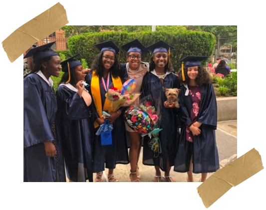
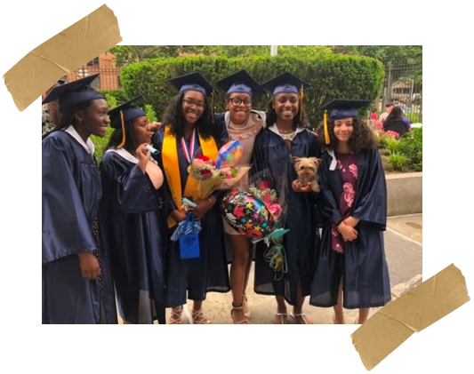
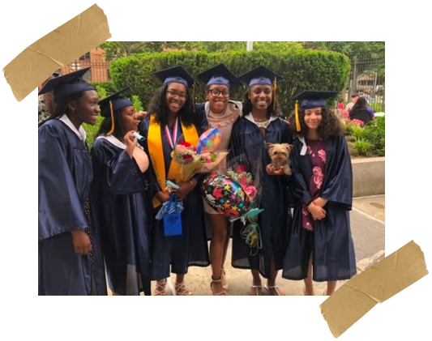
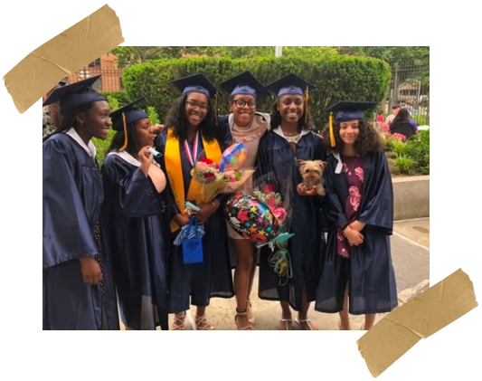

14 Years Old
Graduating middle school was bittersweet. For the first time, I had to leave behind the familiar faces and the comfort of being at a school that spanned from kindergarten through eighth grade. I’d spent so many years around the same people, and the thought of entering a completely new environment for high school, where I was one of the few going to the school I had been accepted to, felt overwhelming.
It wasn’t just school that was changing— it was everything. My siblings had moved out, and for the first time, I got my own room, marking a huge shift in my personal life. Life was changing so immensely, and it was both exhilarating and a little scary.